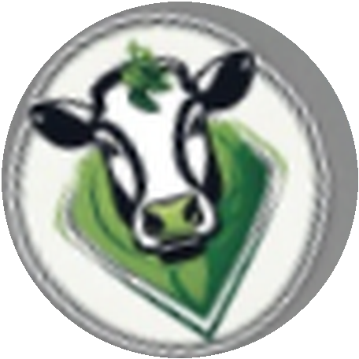

hier komt een foto van de koers

NOG
—dagen
—uur
—min
GOUDSPONSOREN
Programma
van de jongste renners tot de laatste ronde
Rabo Dikke Banden Race
—
- —Leeftijd
- Eigen fietsGeen racefiets of licentie nodig
- —Inschrijfgeld
Parcours en parkeren
De kaart verschijnt zodra de locatie in het CMS is ingevuld
- Start en finish aan de Parallelweg, naast de feesttent.
- Rondelengte nog in te vullen, met het aantal ronden per categorie.
- Parkeren aanwijzingen voor bezoekers en voor renners met aanhanger.
- Afgesloten wegen welke straten wanneer dicht zijn, voor de buurt.
- Inschrijving en kleedruimte locatie op het terrein.
Uitslagen
tijdens de dag bijgewerkt
Nieuws
Sponsors
zonder hen geen ronde
ZILVER
BRONS
Sponsor worden of een prijs beschikbaar stellen? Neem contact op met de organisatie.
Contact
Vragen over inschrijven, het parcours of de dag zelf? Stuur een bericht, dan antwoordt een van ons.
Rechtstreeks mailen kan ook: —
De wielerronde is onderdeel van de jaarmarkt in Giessen.